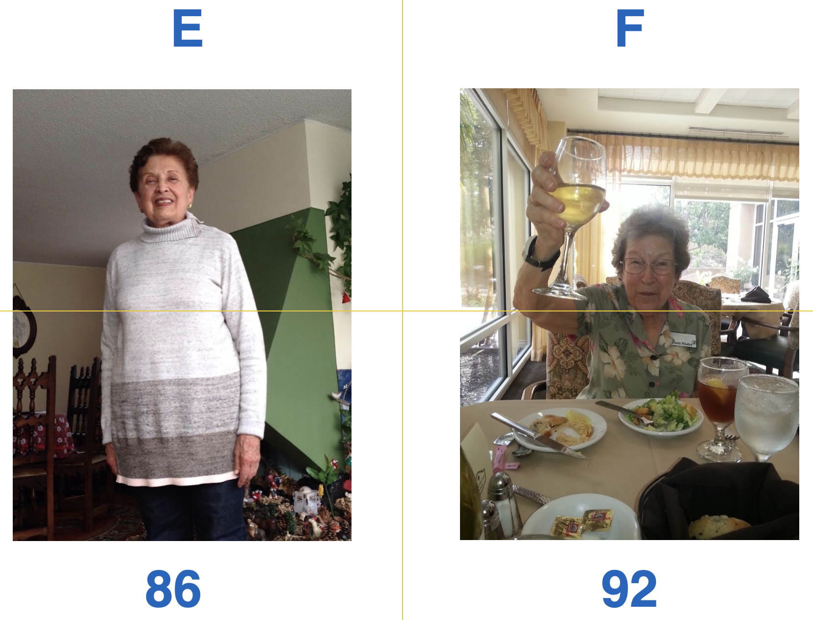
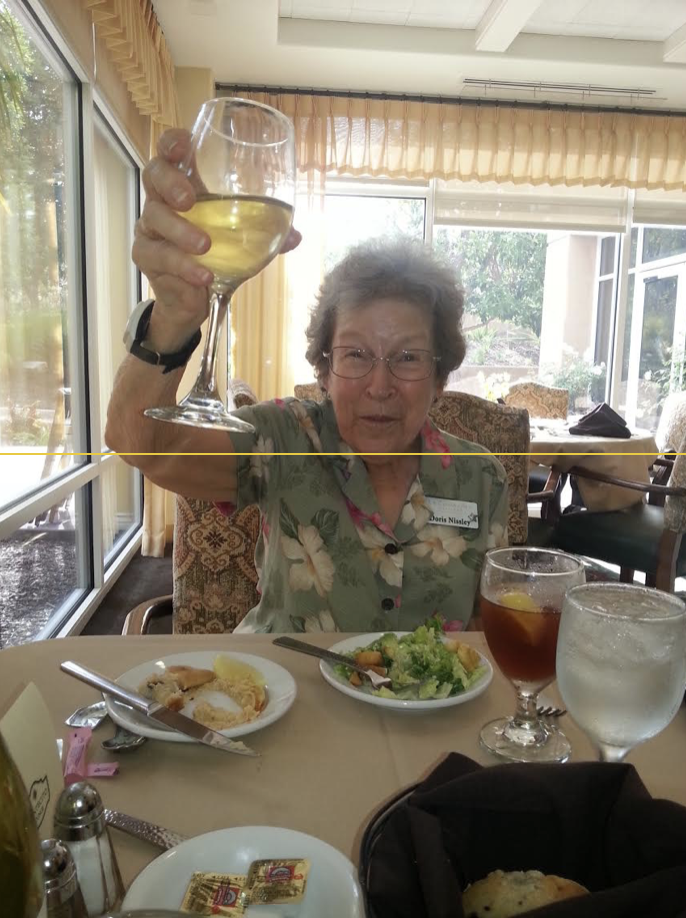
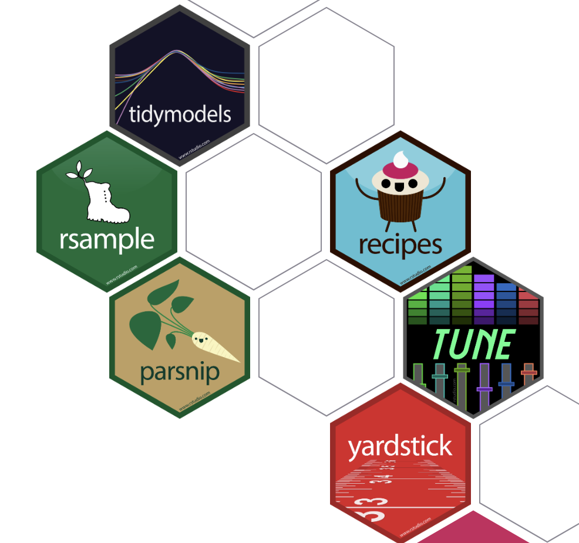
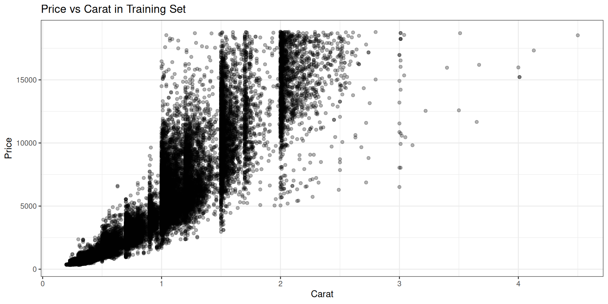
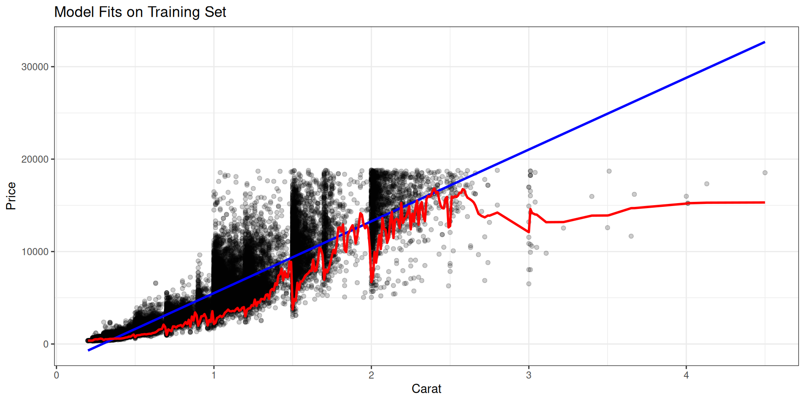

Prediction II
Agenda
- Statistical Modeling
- Notation
- Feature engineering
- Model classes
- Regression vs Classification
- Who won?
- Tidymodels
- Example: predicting diamond prices
Statistical Modeling
Competition: Guess the Age
In groups of 3-4, you will be jointly trying to predict the ages of people shown in photographs. I will show 10 photographs, about 10 seconds per, then you will have 4 minutes to discuss. One team member will enter your predictions into a google form.

What is a predictive model?
A system to take known characteristics of an object and formulate a prediction for an unknown charactistic.
Colors can be represented by a hex code … or by RGB: 0-255 for each of Red, Green, Blue.
What did you look for in photo?

Grayness
find_face()- input: photo
- output: pixel loc that define face
get_hair()- input: photo, face loc
- output: pixel values of hair
avg_grayness()- input: RGB pixels
- output: grayness on a scale of 0-100
Feature Engineering: The process of selecting, cleaning, and transforming raw predictors into features that are more effective for prediction.
How did you turn features into a prediction?
Individual
Linear Model: \(\hat{f}_1(x) = \hat{\beta_0} + \hat{\beta_1} \cdot \text{grayness}\)
K-Nearest Neighbors
- Find the \(k\) observations nearest in X
- Average their y’s
- \(\hat{f}_2(x) = \frac{1}{k} \sum_{i \in N_k(x)} y_i\)
Ensemble
\(\hat{f}_3(x) = 1/2 \cdot \hat{f}_1(x) + 1/2 \cdot \hat{f}_2(x)\)
How did you learn to predict?
Learning happens on training data: both x’s and y’s are known.
Training Set ~70-80% of training data
- Use to find parameters of model (e.g. \(\hat{\beta_0}, \hat{\beta_1}\)) or tuning parameters (e.g. \(k\) in KNN)
Validation Set ~20-30% of training data
- Use to assess performance of models / tuning parameters
Test Set
- Separate data not used in training
- Mimics future data (unknown y’s)
- Used as final test of model performance
Who won?
# A tibble: 18 × 13
Timestamp `Email Address` `Group Name` A B C D E F
<chr> <chr> <chr> <dbl> <dbl> <dbl> <dbl> <dbl> <dbl>
1 11/14/2025 … andrewbray@ber… Correct Ans… 25 43 66 16 85 92
2 11/14/2025 … msebisanovic@b… Team Happy … 24 25 62 25 73 85
3 11/14/2025 … joseph_levin@b… Bruins 18 23 60 22 70 90
4 11/14/2025 … tony.zhang@ber… HAIL YEA 22 27 61 26 69 80
5 11/14/2025 … zijun@berkeley… ggplot2 20 25 50 18 70 82
6 11/14/2025 … ellakaufman@be… BeardBrats 22 25 62 16 75 81
7 11/14/2025 … vang.ja@berkel… Will made it 21 23 53 21 74 85
8 11/14/2025 … fionawl2004@be… Botox & Fac… 20 22 58 27 75 80
9 11/14/2025 … kayleigh_fort@… Clorox 25 23 62 24 71 80
10 11/14/2025 … austinfaille@b… I don’t rea… 22 28 65 21 70 78
11 11/14/2025 … leecharlene@be… Anti-aging … 19 20 67 16 70 83
12 11/14/2025 … myang49@berkel… Tralaleo Tr… 20 20 40 40 60 70
13 11/14/2025 … ianchan@berkel… Ian’s bad w… 18 18 47 14 74 82
14 11/14/2025 … aryssam@berkel… Keep it cle… 20 24 55 19 68 79
15 11/14/2025 … carsonkuehnert… Group 2 19 20 62 18 72 79
16 11/14/2025 … charles_tao@be… Mean Girls 19 23 60 12 67 72
17 11/14/2025 … christian.gee@… I’M A STATM… 22 19 55 27 65 83
18 11/14/2025 … sofi_cv@berkel… Flower power 20 21 67 18 72 78
# ℹ 4 more variables: G <dbl>, H <dbl>, I <dbl>, J <dbl># A tibble: 10 × 19
Photo y `Team Happy Birthday` Bruins `HAIL YEA` ggplot2 BeardBrats
<chr> <dbl> <dbl> <dbl> <dbl> <dbl> <dbl>
1 A 25 24 18 22 20 22
2 B 43 25 23 27 25 25
3 C 66 62 60 61 50 62
4 D 16 25 22 26 18 16
5 E 85 73 70 69 70 75
6 F 92 85 90 80 82 81
7 G 38 37 47 41 43 36
8 H 46 40 35 38 45 45
9 I 2 4 4 5 5 4
10 J 24 27 26 27 33 27
# ℹ 12 more variables: `Will made it` <dbl>, `Botox & Facelifts` <dbl>,
# Clorox <dbl>, `I don’t really care` <dbl>, `Anti-aging 🦖🐣` <dbl>,
# `Tralaleo Tralala` <dbl>, `Ian’s bad wifi` <dbl>,
# `Keep it clean folks ;)` <dbl>, `Group 2` <dbl>, `Mean Girls` <dbl>,
# `I’M A STATMAN` <dbl>, `Flower power` <dbl>Who won? Why?
03:00
# A tibble: 170 × 4
Photo y model y_hat
<chr> <dbl> <chr> <dbl>
1 A 25 Team Happy Birthday 24
2 A 25 Bruins 18
3 A 25 HAIL YEA 22
4 A 25 ggplot2 20
5 A 25 BeardBrats 22
6 A 25 Will made it 21
7 A 25 Botox & Facelifts 20
8 A 25 Clorox 25
9 A 25 I don’t really care 22
10 A 25 Anti-aging 🦖🐣 19
# ℹ 160 more rows# A tibble: 170 × 7
Photo y model y_hat correct abs_err sq_err
<chr> <dbl> <chr> <dbl> <lgl> <dbl> <dbl>
1 A 25 Team Happy Birthday 24 FALSE 1 1
2 A 25 Bruins 18 FALSE 7 49
3 A 25 HAIL YEA 22 FALSE 3 9
4 A 25 ggplot2 20 FALSE 5 25
5 A 25 BeardBrats 22 FALSE 3 9
6 A 25 Will made it 21 FALSE 4 16
7 A 25 Botox & Facelifts 20 FALSE 5 25
8 A 25 Clorox 25 TRUE 0 0
9 A 25 I don’t really care 22 FALSE 3 9
10 A 25 Anti-aging 🦖🐣 19 FALSE 6 36
# ℹ 160 more rows# A tibble: 17 × 4
model prop_correct mae rmse
<chr> <dbl> <dbl> <dbl>
1 Anti-aging 🦖🐣 0.1 7.15 9.90
2 BeardBrats 0.1 5.4 7.67
3 Botox & Facelifts 0.1 8.1 9.89
4 Bruins 0 8 9.80
5 Clorox 0.2 7 9.35
6 Flower power 0 6.8 9.57
7 Group 2 0 7.7 10.1
8 HAIL YEA 0 7.9 9.39
9 I don’t really care 0 8 9.49
10 Ian’s bad wifi 0.1 9.5 12.0
11 I’M A STATMAN 0 10.1 12.1
12 Keep it clean folks ;) 0.1 8.6 10.6
13 Mean Girls 0 8 11.1
14 Team Happy Birthday 0 6.3 8.15
15 Tralaleo Tralala 0 14.8 17.6
16 Will made it 0 7.8 9.60
17 ggplot2 0 8.4 10.2 responses |>
pivot_longer(
cols = -c(Photo, y),
names_to = "model",
values_to = "y_hat") |>
mutate(
correct = y_hat == y,
abs_err = abs(y_hat - y),
sq_err = (y_hat - y)^2) |>
group_by(model) |>
summarise(
prop_correct = mean(correct),
mae = mean(abs_err),
rmse = sqrt(mean(sq_err))) |>
arrange(desc(prop_correct))# A tibble: 17 × 4
model prop_correct mae rmse
<chr> <dbl> <dbl> <dbl>
1 Clorox 0.2 7 9.35
2 Anti-aging 🦖🐣 0.1 7.15 9.90
3 BeardBrats 0.1 5.4 7.67
4 Botox & Facelifts 0.1 8.1 9.89
5 Ian’s bad wifi 0.1 9.5 12.0
6 Keep it clean folks ;) 0.1 8.6 10.6
7 Bruins 0 8 9.80
8 Flower power 0 6.8 9.57
9 Group 2 0 7.7 10.1
10 HAIL YEA 0 7.9 9.39
11 I don’t really care 0 8 9.49
12 I’M A STATMAN 0 10.1 12.1
13 Mean Girls 0 8 11.1
14 Team Happy Birthday 0 6.3 8.15
15 Tralaleo Tralala 0 14.8 17.6
16 Will made it 0 7.8 9.60
17 ggplot2 0 8.4 10.2 # A tibble: 17 × 4
model prop_correct mae rmse
<chr> <dbl> <dbl> <dbl>
1 BeardBrats 0.1 5.4 7.67
2 Team Happy Birthday 0 6.3 8.15
3 Flower power 0 6.8 9.57
4 Clorox 0.2 7 9.35
5 Anti-aging 🦖🐣 0.1 7.15 9.90
6 Group 2 0 7.7 10.1
7 Will made it 0 7.8 9.60
8 HAIL YEA 0 7.9 9.39
9 Bruins 0 8 9.80
10 I don’t really care 0 8 9.49
11 Mean Girls 0 8 11.1
12 Botox & Facelifts 0.1 8.1 9.89
13 ggplot2 0 8.4 10.2
14 Keep it clean folks ;) 0.1 8.6 10.6
15 Ian’s bad wifi 0.1 9.5 12.0
16 I’M A STATMAN 0 10.1 12.1
17 Tralaleo Tralala 0 14.8 17.6 # A tibble: 17 × 4
model prop_correct mae rmse
<chr> <dbl> <dbl> <dbl>
1 BeardBrats 0.1 5.4 7.67
2 Team Happy Birthday 0 6.3 8.15
3 Clorox 0.2 7 9.35
4 HAIL YEA 0 7.9 9.39
5 I don’t really care 0 8 9.49
6 Flower power 0 6.8 9.57
7 Will made it 0 7.8 9.60
8 Bruins 0 8 9.80
9 Botox & Facelifts 0.1 8.1 9.89
10 Anti-aging 🦖🐣 0.1 7.15 9.90
11 Group 2 0 7.7 10.1
12 ggplot2 0 8.4 10.2
13 Keep it clean folks ;) 0.1 8.6 10.6
14 Mean Girls 0 8 11.1
15 Ian’s bad wifi 0.1 9.5 12.0
16 I’M A STATMAN 0 10.1 12.1
17 Tralaleo Tralala 0 14.8 17.6 How should we evaluate predictions?
Which data?
- New data not used in training, a test set.
Which metrics?
- Prop Correct: \(\frac{1}{n} \sum_{i=1}^n \mathbf{1}(y_i = \hat{y}_i)\)
- MAE: \(\frac{1}{n} \sum_{i=1}^n |y_i - \hat{y}_i|\)
- RMSE: \(\sqrt{\frac{1}{n} \sum_{i=1}^n (y_i - \hat{y}_i)^2}\)
Tidymodels
Case Study: Diamonds
# A tibble: 53,940 × 10
carat cut color clarity depth table price x y z
<dbl> <ord> <ord> <ord> <dbl> <dbl> <int> <dbl> <dbl> <dbl>
1 0.23 Ideal E SI2 61.5 55 326 3.95 3.98 2.43
2 0.21 Premium E SI1 59.8 61 326 3.89 3.84 2.31
3 0.23 Good E VS1 56.9 65 327 4.05 4.07 2.31
4 0.29 Premium I VS2 62.4 58 334 4.2 4.23 2.63
5 0.31 Good J SI2 63.3 58 335 4.34 4.35 2.75
6 0.24 Very Good J VVS2 62.8 57 336 3.94 3.96 2.48
7 0.24 Very Good I VVS1 62.3 57 336 3.95 3.98 2.47
8 0.26 Very Good H SI1 61.9 55 337 4.07 4.11 2.53
9 0.22 Fair E VS2 65.1 61 337 3.87 3.78 2.49
10 0.23 Very Good H VS1 59.4 61 338 4 4.05 2.39
# ℹ 53,930 more rowsHow can we predict price from carat?
Linear Models in Base R
(Intercept) carat
-2256.361 7756.426 [1] 1548.533How do I include other models?

Tidymodels: A collection of R packages for machine learning using tidyverse principles.
1. Train/test split (rsample)
Goal: randomly assign 80% of rows to training and the rest to resting. Bin by price to ensure representation in both sets across range of y.
inital_split(data, prop, strata): create train/test splittraining(split): extract training settesting(split): extract test set
1. Train/test split (rsample)
Goal: randomly assign 80% of rows to training and the rest to resting. Bin by price to ensure representation in both sets across range of y.
# A tibble: 43,152 × 10
carat cut color clarity depth table price x y z
<dbl> <ord> <ord> <ord> <dbl> <dbl> <int> <dbl> <dbl> <dbl>
1 0.23 Ideal E SI2 61.5 55 326 3.95 3.98 2.43
2 0.21 Premium E SI1 59.8 61 326 3.89 3.84 2.31
3 0.23 Good E VS1 56.9 65 327 4.05 4.07 2.31
4 0.31 Good J SI2 63.3 58 335 4.34 4.35 2.75
5 0.24 Very Good J VVS2 62.8 57 336 3.94 3.96 2.48
6 0.24 Very Good I VVS1 62.3 57 336 3.95 3.98 2.47
7 0.26 Very Good H SI1 61.9 55 337 4.07 4.11 2.53
8 0.22 Fair E VS2 65.1 61 337 3.87 3.78 2.49
9 0.3 Good J SI1 64 55 339 4.25 4.28 2.73
10 0.22 Premium F SI1 60.4 61 342 3.88 3.84 2.33
# ℹ 43,142 more rows2. Visualize training data

3. Preprocessing (recipes)
Goal: define a recipe to clean / feature engineer the data for training / prediction.
recipe(y ~ x, data): specify outcome and predictors in formula interfacestep_(): add steps to clean / transform data
3. Preprocessing (recipes)
Goal: define a recipe to clean / feature engineer the data for training / prediction.
4. Specify Models (parsnip)
Goal: define model specifications for linear regression and KNN regression.
linear_reg(): linear regression modelnearest_neighbor(): KNN modelset_mode(): specify regression vs classificationset_engine(): specify underlying implementation
4. Specify Models (parsnip)
Goal: define model specifications for linear regression and KNN regression.
5. Workflows (workflows)
Goal: combine model specifications and preprocessing recipes into workflows for fitting.
workflow(): create empty workflowadd_model(): add model spec to workflowadd_recipe(): add recipe to workflow
5. Workflows (workflows)
Goal: combine model specifications and preprocessing recipes into workflows for fitting.
6. Fit Models (fit)
Goal: fit both models on the training set.
fit(workflow, data): fit model defined by workflow on data
6. Fit Models (fit)
Goal: fit both models on the training set.
Visualize fit

7. Evaluate Models (yardstick)
Goal: evaluate both models on the test set using RMSE, R-squared, and MAE.
metric_set(): create set of metrics to compute all at oncepredict(fit, new_data): generate predictions from fitted modelmetric_fun(truth, estimate): compute metrics given true and predicted values
7. Evaluate Models (yardstick)
Goal: evaluate both models on the test set using RMSE, R-squared, and MAE.
7. Evaluate Models (yardstick)
Goal: evaluate both models on the test set using RMSE, R-squared, and MAE.
# A tibble: 3 × 4
.metric .estimator .estimate model
<chr> <chr> <dbl> <chr>
1 rmse standard 2694. KNN regression
2 rsq standard 0.753 KNN regression
3 mae standard 1678. KNN regression7. Evaluate Models (yardstick)
Goal: evaluate both models on the test set using RMSE, R-squared, and MAE.
# A tibble: 6 × 4
model .metric .estimator .estimate
<chr> <chr> <chr> <dbl>
1 Linear regression rmse standard 1535.
2 Linear regression rsq standard 0.850
3 Linear regression mae standard 1001.
4 KNN regression rmse standard 2694.
5 KNN regression rsq standard 0.753
6 KNN regression mae standard 1678. Machine Learning